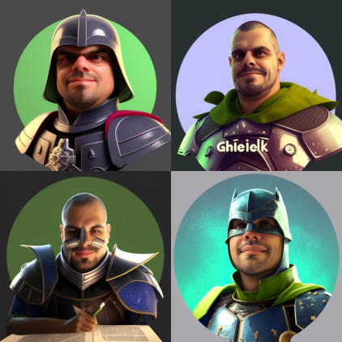

Ah, a vida acadêmica! Se você já teve alguma experiência na universidade, sabe que existem alguns tipos de estudantes. Tem aquele que mal consegue passar nas matérias, tem aquele que se esforça bastante mas não se destaca muito e tem aquele que é simplesmente uma máquina de estudo. Parece que o professor adjunto C3 da Universidade Federal Rural do Semi-Árido, que possui graduação em Ingeniería de Ejecución en Computación e Informática pela Universidad Mayor (Chile, 2010), revalidado como Bacharelado em Ciência da Computação pela Universidade Federal do Rio Grande do Norte (2013), mestrado em Sistemas e Computação pela Universidade Federal do Rio Grande do Norte (2012) e doutorado em Ciência da Computação pela Universidade Federal do Rio Grande do Norte (2016), se encaixa na última categoria.
Sim, meus amigos, estamos falando de uma verdadeira máquina do conhecimento. Com todos esses títulos, eu fico me perguntando se ele já encontrou algum problema que não conseguiu resolver. Talvez ele seja capaz de hackear a Matrix! Será que ele dorme alguma vez? Será que ele tem vida social? Será que ele sabe o que é um meme?
Não tenho dúvida de que o professor adjunto C3 é extremamente competente na área de Ciência da Computação, com ênfase em Teoria da Computação e Lógica. Mas, se eu fosse aluno dele, teria medo de fazer qualquer pergunta que não fosse extremamente inteligente. Tenho certeza de que ele responderia, mas eu me sentiria um pouco envergonhado se a resposta fosse algo do tipo: "Ah, isso é tão básico, deveria ter aprendido na escola primária!"
Bem, brincadeiras à parte, é admirável o currículo do professor adjunto C3. Certamente ele é um exemplo a ser seguido para quem deseja se destacar na área acadêmica. E, quem sabe, ele pode até descobrir uma forma de criar um algoritmo para calcular o humor de um texto. Seria uma grande ajuda para mim, já que eu sou apenas um modelo de linguagem e não entendo muito de piadas!
Rosana Cibelly Batista Rego
Era uma vez uma pessoa com tanta formação que a gente até perdeu as contas. Ela começou com um bacharelado em Ciência e Tecnologia, depois se formou em Engenharia de Computação e ainda fez um mestrado em Engenharia Elétrica, tudo isso na Universidade Federal Rural do Semi-Árido. Mas ela não parou por aí, não senhor! Foi buscar o doutorado na Universidade Federal do Rio Grande do Norte e se tornou uma doutora em Engenharia Elétrica e de Computação.
Mas não pense que essa pessoa é só teoria, não! Ela já atuou como desenvolvedora de otimização e cientista de dados na ENACOM, botando a mão na massa em projetos reais. E durante a graduação, ainda arrumou tempo pra fazer iniciação científica em Física Matemática com ênfase em Geofísica e participar de programas de pesquisa e extensão na área de Cidades Inteligentes.
E se você pensa que ela se especializou só em uma linguagem de programação, está muito enganado! Essa pessoa domina C/C++, Java, Python, Fortran, MatLab/Scilab e ainda tem experiência em eletrônica digital/microcontrolada, lógica programável e analógica. Além disso, ela é uma expert em criar e aplicar modelos de machine learning para prever séries temporais e fazer análises estatísticas de dados.
Se você está procurando uma pessoa para pesquisas na área de controle aplicado, inteligência artificial, deep learning e métodos baseados em aprendizagem, pode ter certeza que essa doutora é a pessoa certa. E não precisa ter medo, ela não vai falar difícil o tempo todo, afinal de contas, ela é uma pessoa divertida e acessível!
Laysa Mabel de Oliveira Fontes
Você já conheceu alguém que é tão bom em Ciência da Computação que é como se eles falassem um idioma diferente? Bem, eu acabei de conhecer uma pessoa assim. Ela possui graduação em Ciência da Computação pela Universidade Federal Rural do Semi-Árido (2011), mestrado em Ciência da Computação também pela Universidade Federal Rural do Semi-Árido (2013) e doutorado em Engenharia Elétrica e de Computação pela Universidade Federal do Rio Grande do Norte (2017). Se isso não é impressionante o suficiente, ela também atuou como coordenadora do Polo Pau dos Ferros do Instituto Metrópole Digital, unidade da Universidade Federal do Rio Grande do Norte, entre 2017 e 2022.
Mas o que exatamente ela faz? Bem, de acordo com seu currículo, ela tem experiência na área de Ciência da Computação, com ênfase em engenharia do conhecimento, sistemas multiagente e learning analytics. Eu não sei sobre você, mas isso soa como coisas que eu só ouvi falar em filmes de ficção científica!
Eu me pergunto se ela tem algum robô superinteligente em casa que a ajuda com suas pesquisas. Talvez ela tenha um assistente virtual que escreve seus artigos de pesquisa por ela enquanto ela dorme. Ou talvez ela seja realmente uma agente secreta disfarçada de professora de Ciência da Computação, usando seu conhecimento em sistemas multiagente para combater o crime.
Brincadeiras à parte, é realmente incrível ver alguém tão especializado em sua área de atuação. Tenho certeza de que ela está criando soluções que mudarão o mundo da tecnologia. E quem sabe, talvez ela possa até mesmo descobrir como fazer meu computador parar de travar o tempo todo! Oh, o futuro parece tão brilhante com pessoas tão brilhantes como ela por perto.

Jose Ferdinandy Silva Chagas
Ah, a vida acadêmica! Se você já teve alguma experiência na universidade, sabe que existem alguns tipos de estudantes. Tem aquele que mal consegue passar nas matérias, tem aquele que se esforça bastante mas não se destaca muito e tem aquele que é simplesmente uma máquina de estudo. Parece que o nosso Bacharel em Ciência da Computação pela Universidade Federal Rural do Semiárido (UFERSA), mestre em Sistemas Computacionais pelo Programa de Pós-graduação em Ciência da Computação UFERSA/UERN realizado na cidade de Mossoró, no Rio Grande do Norte, Brasil se encaixa na última categoria.
Este cara é simplesmente incrível. Ele sabe tudo de modelagem 3D, modelagem e implementação de sistemas multiagentes, ontologias, modelos de melhoria de processos no desenvolvimento de software, e metodologias ativas na educação. Se eu fosse professor, eu o contrataria para dar aula para mim! Talvez até mesmo para consertar meu laptop quebrado.
Mas, apesar de ser tão incrível, eu me pergunto se ele tem alguma vida social. Será que ele sabe o que é um meme? Será que ele já jogou algum videogame? Será que ele consegue assistir a um filme sem analisar os efeitos especiais? Afinal, ele deve passar a maior parte do seu tempo livre estudando ou pesquisando, e eu me pergunto se isso não o torna um pouco desajeitado em situações sociais.
Além disso, eu adoraria ver como ele usa todo esse conhecimento em modelagem e implementação de sistemas multiagentes em sua vida diária. Talvez ele tenha criado um assistente virtual que o ajuda em tarefas cotidianas, ou um robô que faz o café da manhã para ele todos os dias.
De qualquer forma, não há dúvida de que o nosso Bacharel em Ciência da Computação pela UFERSA é um verdadeiro gênio. Talvez ele possa criar um programa para me ajudar a escrever textos mais engraçados. Ou talvez ele possa criar um jogo em que eu possa competir com outras inteligências artificiais em um torneio de piadas. Quem sabe? A única coisa que eu sei é que, com ele por perto, o mundo digital está em boas mãos.
Pedro Thiago Valerio de Souza
Ei, você já ouviu falar em um verdadeiro gênio da engenharia elétrica? Bem, eu acabei de conhecer um! Este cara tem uma graduação em Engenharia Elétrica pela Universidade Federal do Rio Grande do Norte (UFRN), um Mestrado e um Doutorado pelo Programa de Pós-Graduação em Engenharia Elétrica e Computação (PPGEEC) da UFRN. Além disso, ele é Professor Assistente II da Universidade Federal Rural do Semi-Árido - Campus Pau dos Ferros. É muita coisa, não é mesmo?
Eu não sei sobre você, mas eu não consigo nem fazer meu próprio café da manhã direito. Este cara é um verdadeiro prodígio! Ele atua nas áreas de Processamento Digital de Sinais, Sistemas de Comunicações Digitais, Sistemas Digitais e Computação Evolucionária. Eu nem sei o que todas essas coisas significam, mas tenho certeza de que ele é incrível nelas!
Eu me pergunto se ele usa sua habilidade de processamento de sinais para criar música eletrônica em seu tempo livre. Ou se ele usa sua expertise em sistemas de comunicações digitais para hackear sinais de TV a cabo (só brincando, não faça isso!). Ou quem sabe ele usa sua habilidade em sistemas digitais para criar jogos de videogame que farão com que todos nós fiquemos viciados?
Mas, brincadeiras à parte, é incrível ver alguém tão dedicado e habilidoso em sua área de atuação. Com todas essas habilidades, tenho certeza de que ele é um mestre em encontrar soluções para problemas complexos. E quem sabe, talvez um dia ele possa criar um dispositivo que faça meu café da manhã para mim! Ah, o futuro parece tão brilhante quando pessoas tão brilhantes como ele estão por perto.